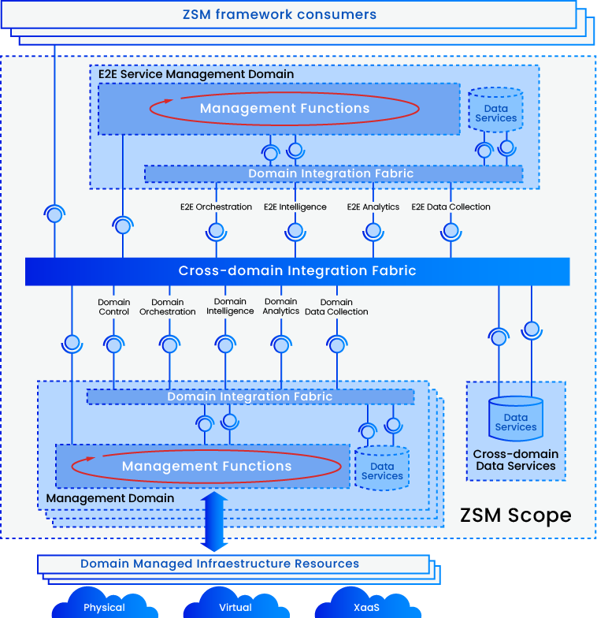
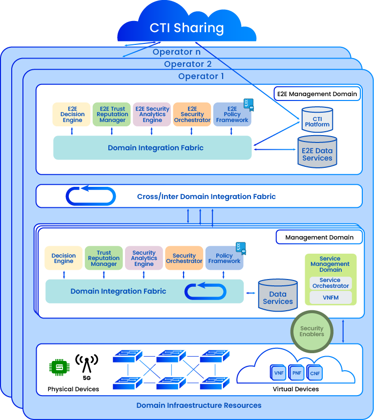
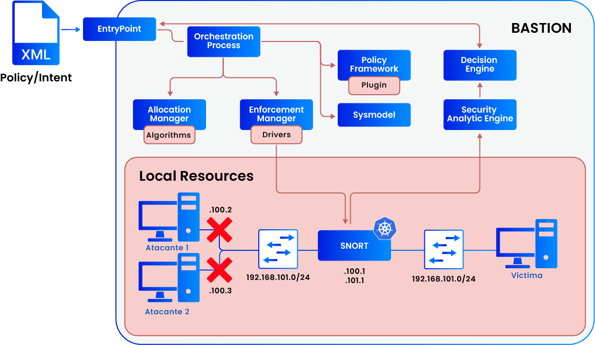

ORCIBER-5G es un proyecto orientado al diseño de mecanismos de orquestación de la seguridad para redes 5G, con un enfoque centrado en servicios, despliegues multiusuario y entornos de red heterogéneos. Su meta es facilitar la operación y supervisión de la ciberseguridad en sistemas distribuidos de forma dinámica y eficiente.
Esquema del marco ZSM:
integración de funciones de
gestión,
orquestación e inteligencia a través
de
dominios heterogéneos, coordinados
mediante un tejido de
integración transversal.

A través de un enfoque modular y adaptable, el proyecto aborda distintos dominios tecnológicos, como el control de acceso, la detección de amenazas o la monitorización del comportamiento, bajo una arquitectura común.
Intercambio de inteligencia de
ciberamenazas (CTI
Sharing): coordinación
entre múltiples operadores y
dominios
para compartir datos, gestionar políticas
y
orquestar la seguridad de forma conjunta.

Esta aproximación permite optimizar el despliegue de soluciones de seguridad de manera coordinada, escalable y contextualizada, integrando tanto funciones de detección como de decisión y respuesta ante amenazas en tiempo real.
Arquitectura local del sistema BASTION:
aplicación de
políticas, orquestación y análisis
de seguridad para
detectar y bloquear
ataques en tiempo real sobre
recursos
de red.

Objetivos
Este proyecto persigue desarrollar un sistema avanzado de orquestación de ciberseguridad que permita proteger, monitorizar y responder de forma inteligente a incidentes en redes 5G. Para ello, se han definido los siguientes objetivos estratégicos:
Diseñar un marco de orquestación de seguridad extremo a extremo (E2E) que integre múltiples dominios y permita una gestión coordinada.
Facilitar despliegues dinámicos y adaptativos que soporten entornos multiusuario y heterogéneos en redes 5G.
Automatizar la detección de amenazas y anomalías mediante motores de analítica e inteligencia artificial.
Optimizar la aplicación de políticas de seguridad con mecanismos comunes que permitan su validación, traducción y refinamiento en diferentes dominios.
Integrar la monitorización y el control en tiempo real para reforzar la resiliencia frente a ciberataques.
Consolidar un enfoque modular y escalable, capaz de adaptarse a distintas capas de red (core, edge, acceso).
Fomentar la interoperabilidad entre actores y operadores mediante mecanismos de compartición de inteligencia y datos (CTI Sharing).
Impacto
El proyecto ORCIBER‑5G generará un impacto significativo en distintos niveles, tanto tecnológicos como estratégicos y sociales. Sus principales aportaciones se articulan en los siguientes cinco ejes:
Consolidación de un marco de referencia en ciberseguridad para redes 5G privadas, que servirá de apoyo a futuros desarrollos en el ámbito nacional.
Contribución a la estrategia española y europea de ciberseguridad, reforzando la capacidad de anticipación y defensa frente a ciberamenazas.
Generación de conocimiento especializado en orquestación multidominio, con potencial de reutilización en otros sectores críticos.
Transferencia tecnológica hacia entornos industriales y académicos, acercando soluciones innovadoras a casos de uso concretos.
Incremento de la confianza en servicios digitales de nueva generación, favoreciendo la adopción segura de redes 5G en escenarios de alto valor.